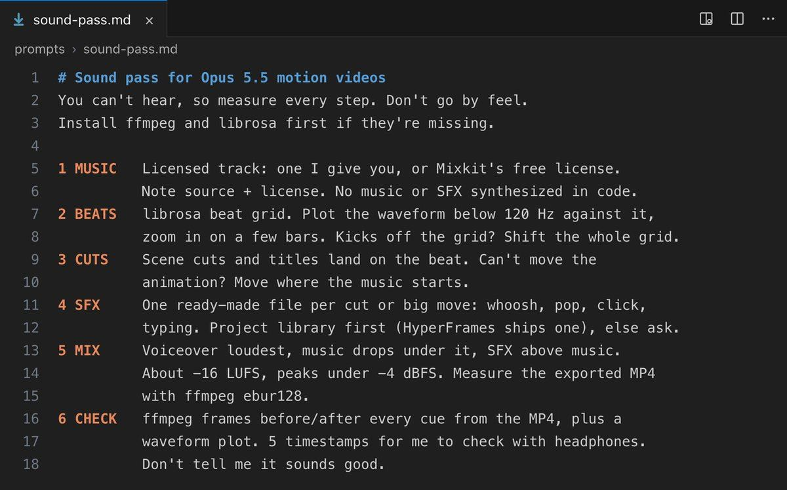

导读
Vox 的思路很简单：Openverse 的公开 API 不要 Key、不要钱，收录了 500 多万条开放许可音频。把这个网址和一句「缺音效就去搜」的规则交给 Opus 5.5，再配合他之前那套「声音设计」提示词，AI 剪动效视频时就能按每个镜头的动作自己去找音效、下载、对齐剪辑点，并把署名原样写进 credits.txt。
原帖全文（中文翻译）
给 Opus 5.5 一个网址，它就能在剪你的视频时搜索 520 万个免费音频文件。不需要 API Key，0 美元。光音效就有 59 万条，音乐 64 万首。
转场用的嗖声（whoosh）、弹出声（pop）、点击声（click）、环境房间底噪（room tone）——里面全都有。
和我们之前那条声音设计提示词搭配使用，它会根据每个镜头里发生了什么来挑音效，并把音效放到对应的剪辑点上。
加上这一句，它在缺声音的时候就会自己去找 👇
当项目里没有合适的音效时，去 Openverse（http://api.openverse.org）搜索。
只使用 license=cc0,by,pdm 且 source=freesound,jamendo 的结果；
每一类声音只搜一次（匿名使用每天限 200 次搜索）。
为每个镜头的动作挑最合适的一条，用 curl 把选中结果的 url 下载到 sfx/ 文件夹，
并把每条结果的 attribution 字段原样复制进 credits.txt。英文原句：When the project has no suitable sound effect, search Openverse (http://api.openverse.org). Only use results with license=cc0,by,pdm and source=freesound,jamendo, and search for each kind of sound only once (anonymous use is limited to 200 searches a day). Pick the best fit for each shot's action, download the chosen url with curl into an sfx/ folder, and copy each result's attribution field into credits.txt as is.
引用的前作：「声音设计」提示词（2026-10-12，作者本人）
原帖引用了 Vox 10 月 12 日 03:00（UTC+8）的另一条帖子，以下同样为全文翻译。

如果你还觉得 Opus 5.5 做的动效视频听起来像廉价的电子哔哔声，试试这个：
「给这个视频配上声音。你听不见，所以每一步都要测量，不要凭感觉。如果没装 ffmpeg 和 librosa，先装上。
- 使用有授权的音乐：我给你的曲子，或者 Mixkit 免费许可下的曲子。记下来源和许可。不要用代码合成音乐或音效。
- 用 librosa 找节拍。它有时会锁到反拍上，所以把 120 Hz 以下的波形和节拍网格画在一起，放大看几个小节。如果底鼓对不上，就把整个网格平移。
- 把大动作——比如场景切换、标题出现——放在拍点上。能改动画就改动画；改不了就挪音乐的起点。
- 每个剪辑点和大动作配一个现成的音效文件：移动用 whoosh，出现用 pop，点击用 click，打字用打字声。优先用项目已有的音效库，比如 HyperFrames 自带的那套；没有就问我。
- 如果有旁白，旁白最响，有人说话时音乐压低。音效高于音乐。整体目标约 −16 LUFS，峰值低于 −4 dBFS，这样经过 AAC 压缩或在手机单声道扬声器上播放都不会削波。用 ffmpeg 的 ebur128 测导出的 MP4，不要测 WAV。
- 用 ffmpeg 从导出的 MP4 里，在每个提示点前后各截一帧，再画一张波形图做对比。然后挑 5 个时间点让我戴耳机检查。不要告诉我「听起来很好」。」
几天前我给一个视频配乐，librosa 就锁到了反拍上。整个节拍网格偏了 0.22 秒，我是把 120 Hz 以下的波形和网格画在一起才发现的。
这条前作又引用了作者 10 月 9 日关于 Anthropic《Claude Motion 入门指南》的帖子：Motion 不用视频模型，只把文字、图表、形状和图片做成代码动画；在 Claude Code 里，Opus 5.5 可用 HyperFrames 写同类代码并自行渲染 MP4。三条帖子合起来是一条「代码动画 → 配乐对拍 → 自动补音效」的流水线。
要点
- 免 Key 音频检索：Openverse 公开 API 匿名可用，作者称匿名每天限 200 次搜索，因此提示词要求「每类声音只搜一次」。
- 许可过滤写进规则：只取
cc0/by/pdm（公有领域、署名、公有领域标记），只取 Freesound（音效）与 Jamendo（音乐）两个来源。 - 署名自动化：每条结果自带
attribution字段，原样写入credits.txt，CC BY 的署名义务就不会漏。 - 与前作衔接：前作第 4 步「没有音效库就问我」，这一句把它改成「没有就自己去 Openverse 找」。
- 「你听不见，所以要测量」：前作的核心——用低频波形校准节拍网格、用 ebur128 测导出成品的响度、截帧+波形图交给人耳终检。
实测核对（2026-10-17）
我们调用了 api.openverse.org/v1/audio/stats/：音频总计 5,218,767 条，其中 Wikimedia Audio 3,982,160、Jamendo 644,709、Freesound 591,898——与原帖「520 万 / 音效 59 万 / 音乐 64 万」一致（音效≈Freesound，音乐≈Jamendo）。
按提示词条件搜 q=whoosh&license=cc0,by,pdm&source=freesound,jamendo 返回 240 条；单条结果含 url（MP3 预览直链）、license、creator 与现成的 attribution 句子，例如 "Deep Whoosh #1" by Kinoton is marked with CC0 1.0.
注意：浏览器直接打开 API 会得到 HTML 页面，脚本里请带 Accept: application/json 或 format=json；url 多为 Freesound 的 hq 预览 MP3，并非原始 WAV。